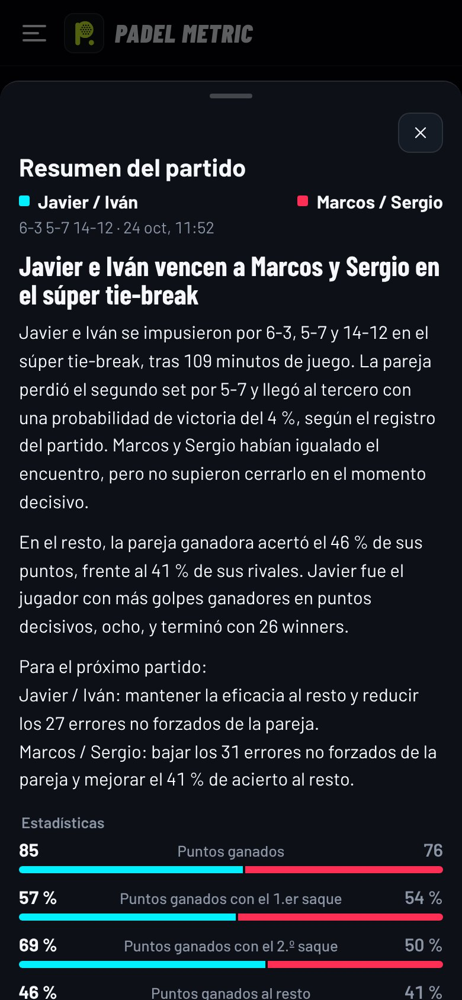
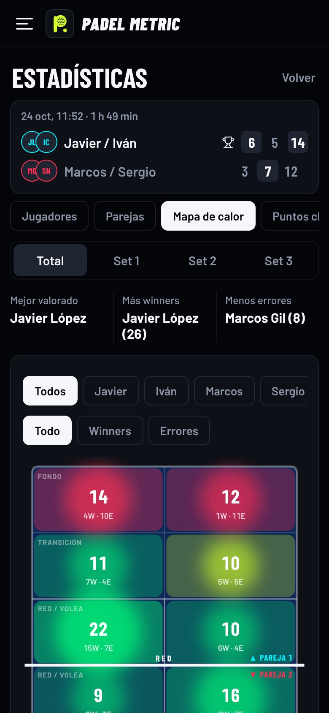

Para entrenadores de pádel
Los números de tus alumnos, punto a punto
Padel Metric es una app para llevar el marcador desde el móvil y saber qué ha pasado en cada punto: quién lo gana, con qué golpe, desde qué zona y en qué momento del partido. Está en pruebas y nos gustaría saber qué te parece antes de publicarla en Google Play.
Gratis y sin crear cuenta. Dentro, en el inicio, pulsa "Ver la app con datos de ejemplo" para verla llena de partidos.
Lo que puede aportarte
- Estadísticas de cada alumnoWinners y errores por golpe (volea, bandeja, víbora, remate, globo…) y por zona de la pista, con mapa de calor.
- Saque, resto y momentos clavePuntos ganados con el primer y el segundo saque, al resto, bolas de break y puntos de oro, como en el circuito profesional.
- Crónica del partido con IAUn resumen escrito a partir de los datos, con un consejo para cada pareja, listo para mandar al grupo.
- Evolución en el tiempoHistorial, ranking ELO, la carta de cada jugador con sus atributos y su temporada en historias.
- Americanos, ligas y torneosCruces, descansos y clasificación automáticos, inscripción con un QR y la clasificación en directo en una tele.
- Anotar sin soltar la palaCon un mando Bluetooth de los de hacer fotos o, en Android, con los botones de volumen.
Así se ve


Tu opinión
Tras probarla un rato, nos ayudaría mucho que respondieras a esto, aunque sea en dos líneas:
- ¿La usarías en tus clases, con tus alumnos o en los americanos que organizas? ¿Para qué exactamente?
- ¿Qué estadística o función echas en falta para tu trabajo?
- Durante un partido, ¿anotarías tú, un alumno o nadie? ¿Te parece rápido anotar?
- ¿Pagarías por alguna parte? ¿Cuál y cuánto te parecería razonable?
- Lo que más te ha gustado y lo que quitarías o cambiarías.
También puedes contestar directamente al mensaje con el que te ha llegado este enlace.